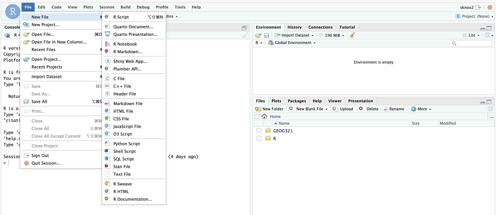

RStudio Server
Here are instructions for accessing and nagivating RStudio Server
This will avoid you having to download R and RStudio on your computer.
However, if you wish to download R & RStudio on your personnal computer, you can find instructions here
Sign in
- Go to https://rstudio.geog.mcgill.ca/
- Login with your McGill credentials
Your window should now look like this:
Adding Folders
First you will want to create a new folder for the course.
- In the lower right window, click on ‘New Folder’

- Enter ‘GEOG321’ as the folder name then click ‘OK’
 ### Creating a new File
### Creating a new File
To create a new file, in the top left click on File > New File. Then select the file of your choice. This is shown in the figure below.  For this course we will primarily be using R Scripts or R Markdown files. However, you will rarely have to create a script/file from scratch as templates will be handed out for Study Questions and Assignments. Below I explain how you can upload an exisiting file.
Uploading a File
After navigating to (i.e., clicking on) your new Folder (GEOG321) you can upload a File to your folder. You can use these instructions for uploading Study Question and Assignment files.
- Click on ‘Upload File’
- Click on ‘Choose File’
- Then navigate to the folder that contains your files of interest and click ’OK.
You should now see a file appear in the lower right window similar to the image below.
- Click on the file to open it. You should it see in the upper left window now. You can readjust the size of the windows to better view your code
Important note on folders and file paths
For this course, all files related to a given assignment or study question should be kept in the same folder (e.g., your GEOG321 folder).
This includes:
- The Markdown file (
.Rmd) - Any data files (e.g.,
.csv,.txt) - Any images you include in your document
Keeping everything in one folder avoids file-path errors and ensures your code runs correctly on the RStudio Server and on the TA’s computer.
How R finds files
When you load a file, R looks in the same folder as your .Rmd file (unless you specify otherwise).
Common file-path mistakes to avoid
- Saving data on your Desktop while your
.Rmdfile is inGEOG321 - Moving files after you have started working on the assignment
- Renaming files without updating the filename in your code
- Using Windows- or Mac-specific file paths
Recommended workflow
- Create your
GEOG321folder - Upload the assignment
.Rmdfile into this folder - Upload all required data files into the same folder
- Open the
.Rmdfrom that folder - Render the document
If your files are organized this way, your code should run without file-path errors.
R Markdown basics (i.e., how to run your code)
You will be given example R Markdown files for your study questions and assignments. An R Markdown file is a plain text file has the extension .Rmd
It contains three important types of content:
- An (optional) YAML header surrounded by —s.
- Chunks of R code surrounded by ```.
- Text mixed with simple text formatting like # heading and italics.
When you open an .Rmd, you get a notebook interface where code and output are interleaved. You can run each code chunk by clicking the Run icon (it looks like a play button at the top of the chunk). RStudio executes the code and displays the results inline with the code.
To produce a complete report containing all text, code, and results, click “Knit”. It will by default knit to html (i.e., create an html file). This is the format you want to upload to myCourses.
Downloading the output to upload your file to myCourses
Once you have completed your Study Questions or Assignments, ‘Knit’ your file to generate an ‘html’ file. The output should now appear in the same location/Folder as your .Rmd file (as shown below).
To export it to a folder on your computer (and then upload it to myCourses).
- Check the box next to your file.
- Click on ‘More’>‘Export’
- Then click on ‘Download’.
Your file should now be in your Downloads Folder.
You can now upload this PDF file to myCourses. Note, the graphs on the html file might not load properly on myCourses. Do NOT worry about this - the TA will download the html files so everything should display properly.